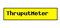

File: NetworkInterfaces/PPP/ThruputMeter.ned
C++ definition: click here
Thruput measurement utility module.
The following diagram shows usage relationships between modules, networks and channels. Unresolved module (and channel) types are missing from the diagram. Click here to see the full picture.
| Name | Type | Description |
|---|---|---|
| startTime | numeric const | |
| batchSize | numeric const | |
| maxInterval | numeric const |
| Name | Direction | Description |
|---|---|---|
| in | input | |
| out | output |
simple ThruputMeter parameters: startTime: numeric const, batchSize: numeric const, maxInterval: numeric const; gates: in: in; out: out; endsimple